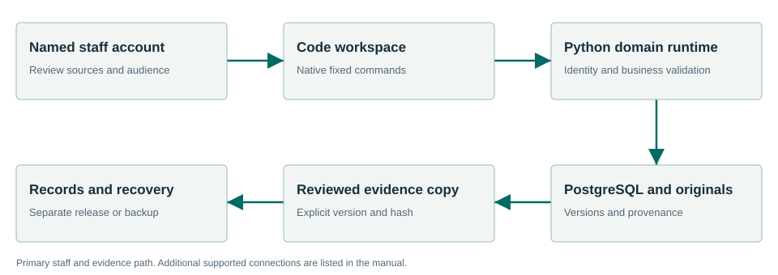

Trace every section to its source and history.
Code imports and preserves municipal code sources, supplies exact citations and version history, and connects proposed legislation to Meetings. Authorized staff separately record adoption evidence and codification.
What the workflow delivers
- Import a source. Inspect the complete bundle JSON for jurisdiction, section identifiers, source/effective dates, original name and hashes before selecting Import. Import submits directly; inspect the saved import and provenance afterward. There is no separate preview/confirmation step.
- Find the exact section. Search the topic and open the cited section. Check the requested as-of date and version. Keep explanatory wording separate from the retained source text.
- Inspect provenance. Read import history, original source and section history. Export the exact cited source when it is needed for a staff workpaper or Records evidence.
- Connect a proposal. Create the existing Code–Meetings connection for the actual proposal and agenda context. Retain the connection identifier and keep pending text distinct from adopted code.
Connected evidence
Receives Meetings decision evidence. Supplies permitted cited material to Records, Zoning, Permitting and Inspections. Planning’s selected installed evidence providers are Meetings and Zoning; no separate direct Code connection is implied.
Know the beta boundary
An imported document is not automatically adopted law. Local imports and orchestration do not establish a live agreement with every commercial codifier. Human approval and authoritative source applicability remain necessary.
Where the evidence goes

Receives Meetings decision evidence. Supplies permitted cited material to Records, Zoning, Permitting and Inspections. Planning’s selected installed evidence providers are Meetings and Zoning; no separate direct Code connection is implied.
Selected staff workflows passed.
The signed private candidate passed normal first-run and selected synthetic workflows in a fresh Windows Sandbox profile. This is not a claim that every screen, vendor, upgrade or city equipment configuration has been certified.
Read the exact acceptance and limits →Ready to evaluate?
Begin with the manual and the signed candidate linked above. Configure the chosen test site and have its staff review source applicability and run the existing workflows.